|
|
|
|
Mención especial al TiT El 27 de octubre de 2014, en el marco de la entrega de los Premios Podestá, la Asociación Argentina de Actores distinguió al TiT con una mención especial por ser un referente de militancia y resistencia artística durante la última dictadura militar argentina. Link al video de entrega de la mención Declaración del TiT Sobre
la mención especial al TiT (Taller de Investigaciones Teatrales) como referente
de militancia y resistencia artística (Premios Podestá 2014) “Antes
de seguir hablando de cultura señalo que el mundo tiene hambre”, escribió Artaud en el prefacio de su libro “El
teatro y su doble”, editado en 1938. El poeta loco, el poeta del dolor,
estaba consustanciado con la realidad, a pesar de que su estética artística
respondía al surrealismo. Quizás por eso era el poeta loco, el poeta del
dolor. Lamentablemente esa frase sigue vigente hoy, y era muy vigente a fines de
los años setenta, cuando un grupo de jóvenes leía su libro y quería hacer
teatro. Un teatro que forjara la cultura ligada a la vida, y que la alimentara.
No un teatro que fuera parte de la cultura que está por encima de la sociedad,
alejada de ella, y que la oprime. Como las instituciones forman parte de la
cultura, esos jóvenes estaban en contra de todas las instituciones que con su
accionar tendieran a perpetrar el hambre y regimentar la vida, y así poder
seguir perpetrando el hambre. Tres
años antes de la edición de ese libro, Bretón, líder del movimiento
surrealista, terminó un discurso en el congreso de una asociación de
escritores revolucionarios, rompiendo definitivamente con el realismo socialista del stalinismo, con la siguiente frase: “Transformar
el mundo, decía Marx. Cambiar la vida, decía Rimbaud. Para nosotros, esas dos
consignas son una sola”. Desde ese momento arte y revolución, revolución
y arte, se volvió un binomio indisoluble para muchos artistas. Revolucionar el
arte, el arte antivida, el arte-comercio, el arte elitista, el arte enchalecado.
Hacer arte para la revolución. Transformar
el mundo y cambiar la vida se convirtió en el norte de todo accionar y
pensamiento de aquellos jóvenes en la Buenos Aires de fines de los setenta. Y
empezaron a hacer, a hacer mucho, en salas de teatro, casonas, bibliotecas,
clubes, la calle, a pesar de estar viviendo bajo las condiciones de represión más
feroces de la historia moderna, cuando estar juntas más de tres personas era
considerado subversivo y pasible de castigos atroces. Todos los hechos teatrales
y las intervenciones realizados por el TiT perseguían romper con el espacio
teatral tradicional escenario-butacas, con la relación desigual
actores-audiencia, con la dependencia del teatro en relación a la literatura.
El teatro es la gente en movimiento, que a partir de la mentira muestran una
verdad, su verdad, consciente o inconscientemente. El objetivo era provocar,
desacartonar, agitar, lograr que el “público” se moviera junto a y en medio
de los “actores”. Esos jóvenes también leían a Ionesco, Lautremont, Peter
Brook, Grotowski, y escribían sus conclusiones y sus propios fundamentos. Y basándose
en escritos de Marx y Engels diseñaron y levantaron la consigna “por
menos artistas y por más hombres y mujeres que hagan arte”. El
25 de marzo de 1981, un día después de un nuevo aniversario del golpe genocida, el TiT
estaba preparando un hecho teatral en el teatro Picadero y sus alrededores con
la frase “Aquí cayó un joven”.
Un llamado anónimo con amenaza de bomba hizo que emergiera la autocensura del
dueño de la sala. Pocos meses después los responsables del llamado cumplían
su promesa con otro pretexto e hicieron volar el teatro en pedazos. Los jóvenes
del TiT empezaron a terminar muy seguido en comisarías, y como muchos de ellos
tenían una vida clandestina de militancia política, el riesgo de desaparecer
era muy alto. Se debió cerrar la casona y el TiT se diluyó. Cuando la
dictadura dejó de existir, el TiT ya no estaba. Arte y revolución, revolución
y arte, eso fue el Taller de Investigaciones Teatrales. La trayectoria fue
corta, pero muy intensa. Aceptamos
esta mención por Juan Uviedo, fundador, mentor e ideólogo del TiT, el gran
provocador; por los centenares de miembros, seguidores y adherentes del TiT; por
varios importantes actores del taller que murieron demasiado temprano; y por el
simple hecho de rescatar la historia de algunos jóvenes audaces que en los años
más oscuros se jugaban la vida disputándoles espacios a las tanquetas y los
Ford Falcon solo con arte, luchando para que resurgiera la vida en medio de tanta
muerte. La entrega de la mención 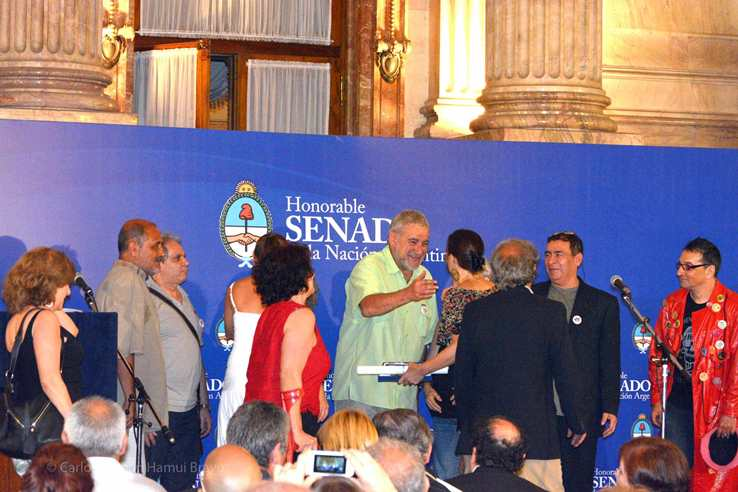 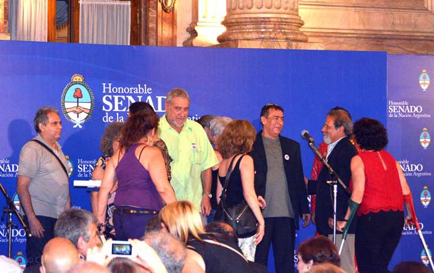 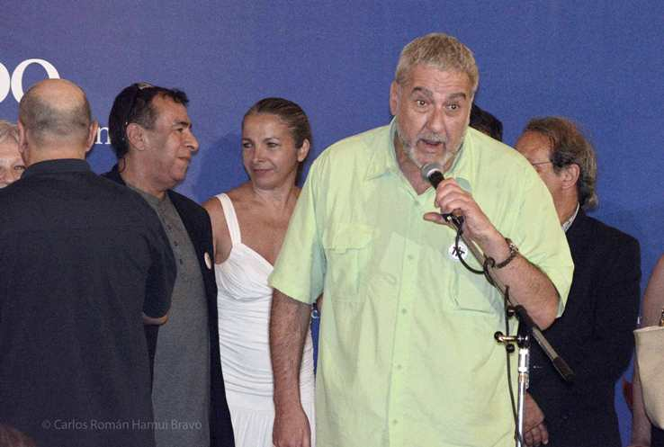 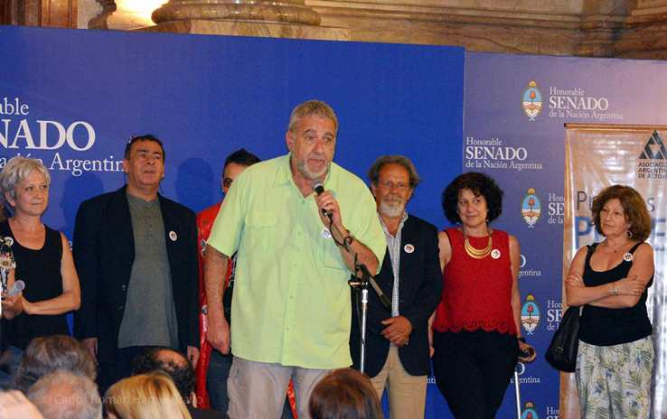 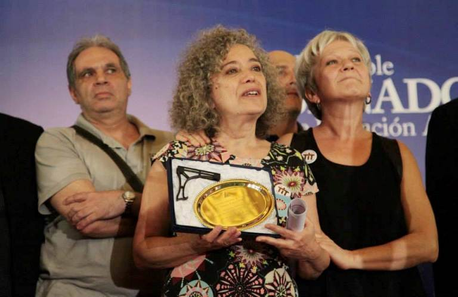 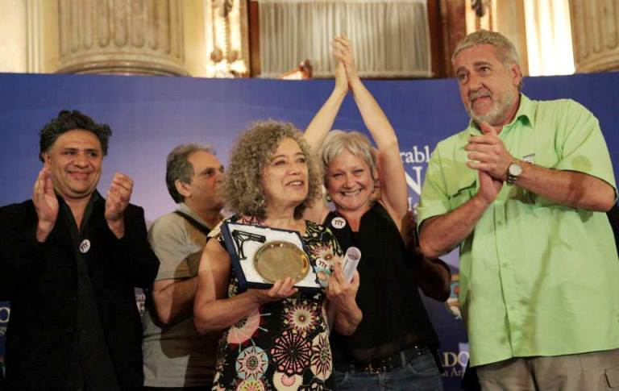 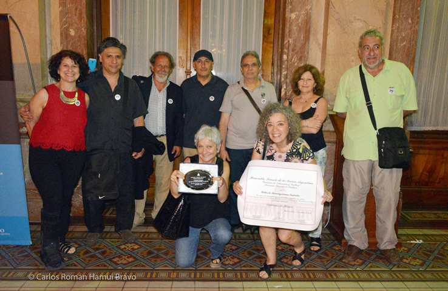 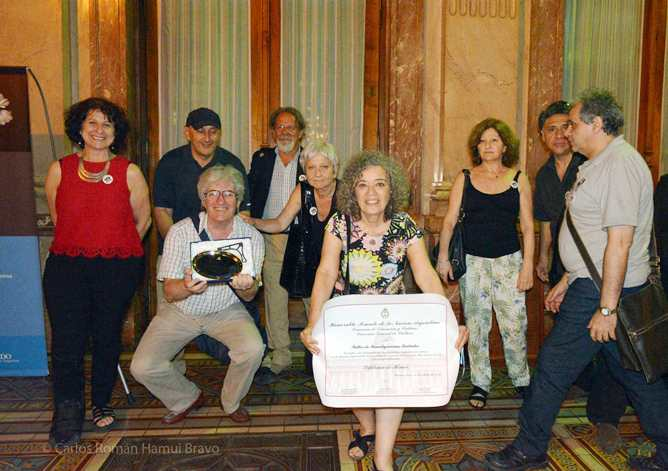 La plaqueta dice: "Mención especial al Taller de Investigaciones Teatrales por ser un referente de militancia y resistencia artística".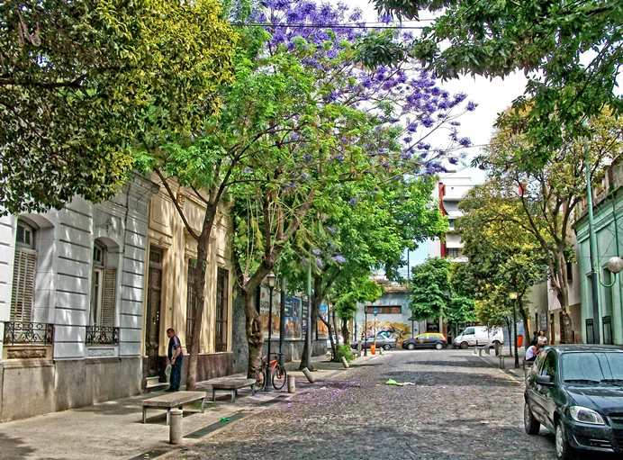 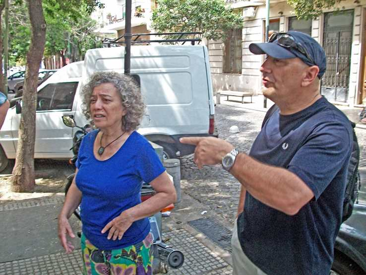 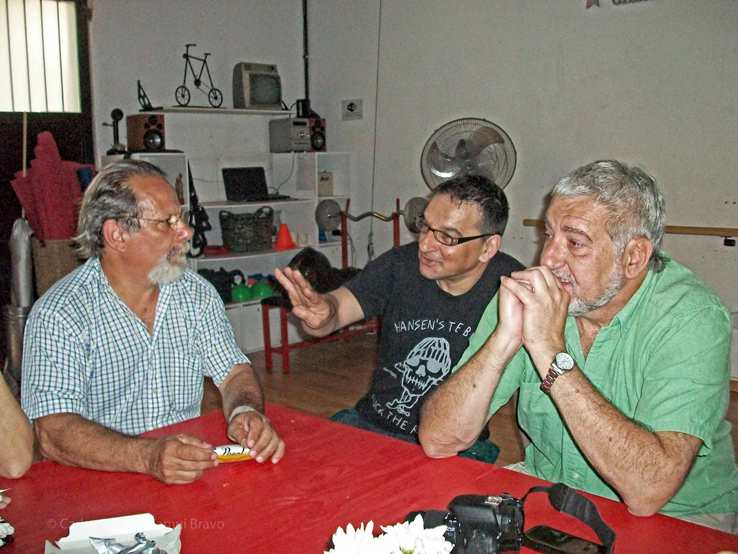 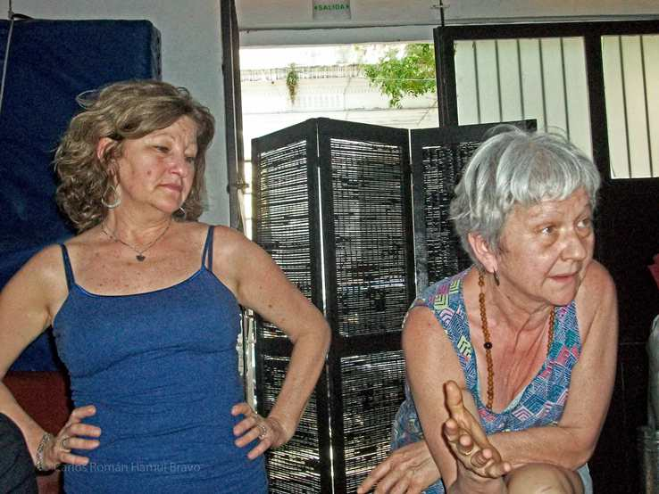 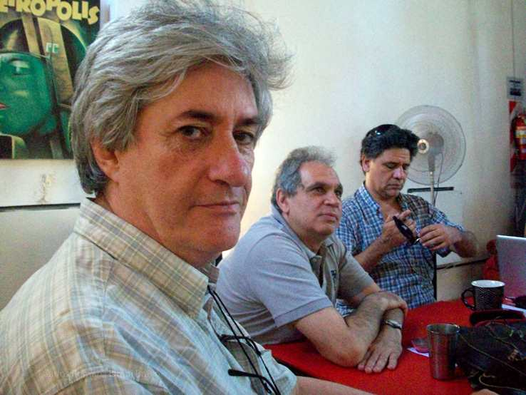
|